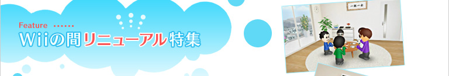
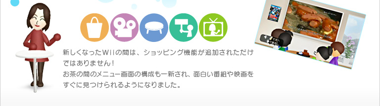
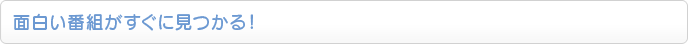
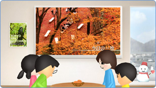
新しいWiiの間を訪ねてみると、見慣れたお茶の間のテレビは壁掛けの大画面になっていたりと、すっかり模様替えされています。
テレビやポスターにはオススメの番組や映画が表示され、そのままちゃぶ台の前でまったりしているだけでも、さまざまな映像を見ることができます。またWiiリモコンを動かすと、Wiiの間の各間や機能に直接移動できるメニューが表示されるようになりました。
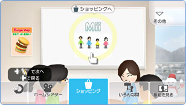
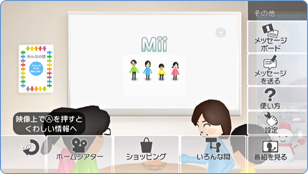
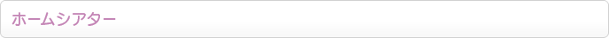
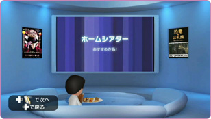
Wiiの間のメニュー画面で「ホームシアター」を選択すると、大きなプロジェクターのある部屋に移動します。ここでは有料の「Wiiポイント」を使って映画やアニメをレンタルすることができます。
視聴できる作品の数は約1,000本以上。新作も毎週のように追加されています。オススメ作品の予告編がプロジェクターやポスターに次々と映し出されますし、ジャンルやシリーズ作品ごとに探すこともできるので、面白そうな作品をすぐに見つけることができるでしょう。
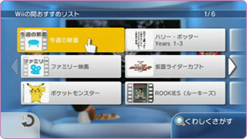
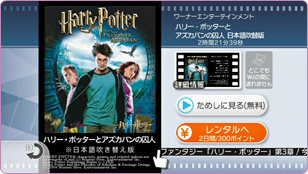
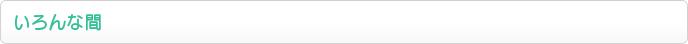
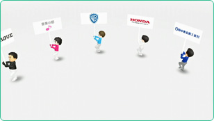
「いろんな間」に入ると、プラカードを持ったたくさんのMiiがパレードをはじめます。ここではさまざまな企業が提供する無料の映像作品やニュース、不定期で行われるプレゼントキャンペーンなどを楽しむことができます。
また、「みんなの間」では、出題されたテーマに合わせてWiiの間ユーザーが投稿した優秀作品を発表しています。みんなの作品を見て楽しむのはもちろん、みなさんもオリジナルグッズ獲得を目指して投稿してみてはいかがでしょうか？
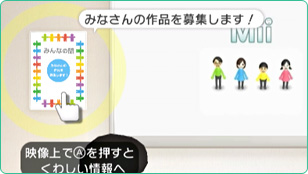
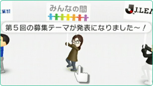
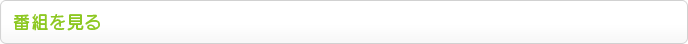
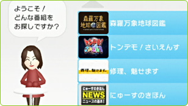
Wiiの間のメニュー画面で「番組を見る」を選択すると、Wiiの間オリジナルの無料番組を見られる「テレビの間」へ移動します。ここには料理から科学まで、さまざまなジャンルの番組がたくさん集まっています。
新着の番組、みんなの満足度の高い番組、コンシェルジュのオススメなどなど、Wiiの間で視聴できる無料の番組をカテゴリごとに探したり、キーワードで検索することもできます。ちょっとした息抜きに何か番組を見たいときなどには、とりあえずここで探してみると良いでしょう。
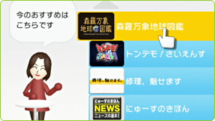
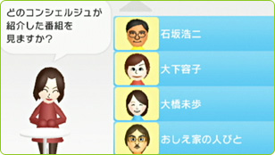
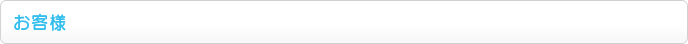
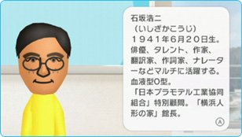
ときおり、著名人のMiiが「コンシェルジュMii」としてあなたのお茶の間を訪れ、オススメの番組などを紹介してくれます。メニュー画面に「お客様」と表示されていたら、選択してみましょう。リニューアル後のコンシェルジュは、実際に声でオススメを教えてくれます！
このコンシェルジュMiiにもう一度会いたくなったら、「メッセージボード」→「最近のお客様一覧」から呼び出すこともできます（一定期間しか呼び出せないMiiもいます）。また「番組を見る」から、コンシェルジュMiiにオススメしてもらった番組を一覧表示させることも可能です。
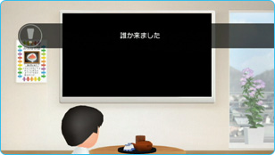
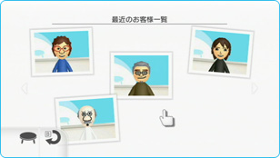